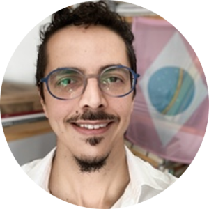
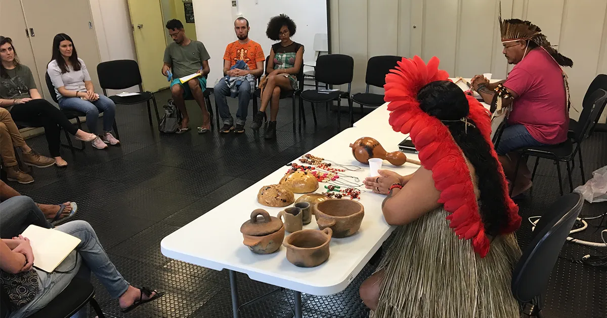
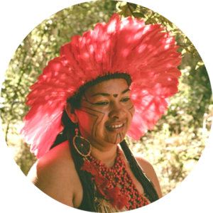

USP oferece formação em museu com professoras indígenas
Todo o acervo da exposição foi escolhido em conjunto com grupos indígenas
O Museu de Arqueologia e Etnologia (MAE) da USP está promovendo a Formação Aberta: Educação Museal, que incluirá a exposição "Resistência Já! Fortalecimento e união das culturas indígenas - Kaingang, Guarani Nhandewa e Terena" no dia 25 de outubro, das 15h às 17h. A exposição será uma oportunidade para apresentar elementos culturais indígenas com a participação dos integrantes de cada uma dessas culturas. O evento contará com a presença de Dirce Jorge Kaingang, Kujã* da terra indígena de Vanuire, e Susilene Elias, assistente e filha da Kujã Dirce. A participação no evento é aberta ao público, mas é necessário fazer uma inscrição pelo link fornecido. Após a inscrição, a organização enviará o link de transmissão do vídeo, que estará disponível no YouTube do MAE. A mediação do evento será feita por Maurício André Silva, professor do MAE. No dia 27 de outubro, das 9h às 12h, haverá um encontro presencial com a dupla indígena. Essa iniciativa busca promover a valorização e o diálogo intercultural, possibilitando uma troca de conhecimentos e experiências entre as culturas indígenas e o público em geral.
O MAE tem o compromisso de oferecer atividades educativas com a participação de pessoas indígenas na curadoria da exposição pelo menos uma semana por mês. Durante a visita, os indígenas têm a oportunidade de compartilhar informações sobre suas culturas, contando com o apoio da exposição para enriquecer a experiência. Uma das principais contribuições da exposição é a aproximação do público de São Paulo das questões indígenas. É sabido que ainda existem muitos equívocos e desinformação sobre o que significa ser indígena.
Maurício André Silva – Foto: Reprodução
No encontro que ocorrerá no dia 25 de outubro, Dirce e Susilene terão a oportunidade de compartilhar informações sobre a cultura Kaingang e descrever a exposição em detalhes. A apresentação será realizada por meio de slides, que apresentarão todo o acervo ancestral da cultura Kaingang disponível no MAE. Durante a exposição, essas mulheres também compartilharão os desafios enfrentados pelos indígenas nos dias atuais. Esse encontro é uma oportunidade para fortalecer o conhecimento e o reconhecimento da cultura Kaingang, tanto no Brasil quanto no exterior.
“Todo mundo que participa do trabalho educativo com os indígenas sai transformado. Sai com uma outra imagem e vê que os indígenas também são pessoas como a gente, que têm sentimentos, que tem desejos e que sonham. Então, é um trabalho de aproximar mesmo, mostrar que todos estamos juntos e tentar sensibilizar especialmente o não indígena para a temática indígena”
No dia 25 de outubro, a transmissão do evento ocorrerá exclusivamente online, permitindo que o público assista à apresentação das indígenas Dirce Jorge e Susilene Elias sobre a exposição e a cultura Kaingang. Porém, no dia 27 de outubro, das 9h às 12h, haverá um encontro presencial com as duas indígenas, que ocorrerá junto à exposição. Esse encontro será aberto ao público e proporcionará a oportunidade de interagir diretamente com Dirce e Susilene, conversar, tirar dúvidas e conhecer de perto os artesanatos relacionados à cultura Kaingang.
Desenvolvimento da Exposição
A partir da década de 1970, os movimentos sociais trouxeram novas reflexões sobre os campos de conhecimento, incluindo os museus, que passaram a repensar sua relação com seu objeto de pesquisa. Passou-se a dar mais atenção às demandas sociais por direitos à memória, ao patrimônio e às narrativas históricas. Nesse contexto, o pensamento museológico ampliou-se para abranger quatro perspectivas fundamentais: patrimônio cultural, território, sociedade e autorrepresentação. Uma das grandes questões enfrentadas pelos museus atualmente é a interculturalidade. Isso envolve a forma como as equipes dos museus trabalham em colaboração com grupos sociais e/ou identitários que veem o museu como um espaço de participação. Marília Xavier Cury, coordenadora-geral do projeto no MAE, destaca que o desafio atual é promover a interculturalidade nos museus, buscando uma colaboração genuína e significativa com os grupos sociais e identitários envolvidos.
Marília Xavier Cury – Foto: Reprodução
A exposição "Resistência Já! Fortalecimento e união das culturas indígenas – Kaingang, Guarani Nhandewa e Terena" foi concebida como uma forma de fazer uma devolutiva aos grupos indígenas em relação aos objetos de seus ancestrais que foram coletados entre o final do século 19 e metade do século 20, no centro-oeste paulista, por antropólogos renomados como Herbert Baldus, Harald Schultz e Egon Schaden. Desde 2010, Marília Xavier Cury tem desenvolvido pesquisas com os grupos indígenas Kaingang, Guarani Nhandewa e Terena, que estão presentes na região de São Paulo. O objetivo dessas pesquisas é estudar e explorar novas formas de abordagem e diálogo entre os indígenas e os museus. Durante esse processo, todo o conteúdo da exposição foi escolhido em conjunto com as culturas indígenas, permitindo que elas contribuíssem ativamente na seleção e interpretação dos objetos expostos. Além dos objetos históricos, os grupos indígenas também trouxeram elementos contemporâneos, que foram incorporados à exposição.
O projeto da exposição "Resistência Já! Fortalecimento e união das culturas indígenas – Kaingang, Guarani Nhandewa e Terena" teve início em outubro de 2016. Após um processo de desenvolvimento, a exposição foi aberta ao público em março de 2019, com a previsão inicial de dois anos de duração. No entanto, devido à pandemia de covid-19, o museu teve que permanecer fechado por um período. Após esse período de fechamento, o MAE decidiu reabrir a exposição em fevereiro de 2022, adaptando sua estrutura para atender aos protocolos de segurança e saúde. Nessa nova fase, a exposição passou a ter um foco claro em alguns pontos fundamentais. O primeiro é informar os grupos indígenas sobre os objetos que se relacionam com seus antepassados, suas histórias e memórias, proporcionando acesso a esses objetos.
Essa abordagem em primeira pessoa na exposição "Resistência Já! Fortalecimento e união das culturas indígenas – Kaingang, Guarani Nhandewa e Terena" é uma das características essenciais do projeto. Os próprios indígenas têm a oportunidade de falar sobre suas coleções, compartilhar suas histórias e transmitir seu conhecimento de forma autêntica e genuína. A ideia é que os indígenas sejam os protagonistas da narrativa, expressando suas perspectivas, vivências e saberes.
Susilene Elias – Foto: Reprodução/MAE
Na ausência física dos grupos indígenas, os mediadores do museu utilizam alternativas para garantir que a versão indígena seja continuamente apresentada e compartilhada. Uma dessas alternativas é a exibição de pequenos vídeos com a fala de representantes indígenas. Esses vídeos permitem que os visitantes tenham acesso direto às vozes e perspectivas dos indígenas, mesmo quando eles não estão presentes fisicamente. O processo de mediação nessa perspectiva valoriza não apenas a temática indígena, mas também a própria voz indígena, permitindo que suas narrativas, experiências e conhecimentos sejam transmitidos de maneira autêntica e respeitosa.
A relação estabelecida entre o MAE e os grupos indígenas traz diversos benefícios e oportunidades enriquecedoras. Um desses benefícios é o exercício intercultural, que promove a união entre pesquisadores e autoridades indígenas, como pajés, caciques e professores, permitindo um diálogo e uma troca de conhecimentos entre diferentes perspectivas e saberes. Outro benefício é a possibilidade de manter as coleções atualizadas de acordo com as demandas contemporâneas. A coordenadora do projeto destaca a importância dos museus respeitarem os saberes tradicionais e as demandas sociais, visando ao exercício pedagógico da tolerância.
Boas práticas
É uma conquista significativa para o MAE ter sido premiado pelo Comitê de Educação e Ação Cultural (Ceca) do Conselho Internacional de Museus (Icom) pela exposição "Resistência Já! Fortalecimento e união das culturas indígenas - Kaingang, Guarani Nhandewa e Terena". O Icom é uma organização não governamental afiliada à Unesco, que desempenha um papel importante na promoção e desenvolvimento de museus em todo o mundo, possuindo status consultivo no Conselho Econômico e Social da ONU. O prêmio do Ceca reconhece as boas práticas e os trabalhos educativos desenvolvidos pelo MAE, destacando o compromisso do museu em promover uma abordagem inclusiva, colaborativa e respeitosa em relação às culturas indígenas.
O texto "I'm here, and always have been!" foi elaborado para a premiação, abordando de forma detalhada o projeto da exposição "Resistência Já! Fortalecimento e união das culturas indígenas - Kaingang, Guarani Nhandewa e Terena", incluindo seu desenvolvimento e a participação dos indígenas na elaboração do trabalho. Através desse texto, foi possível apresentar a proposta inovadora e impactante da exposição, evidenciando como os grupos indígenas foram envolvidos e tiveram sua autorização para a exibição do trabalho. Esse reconhecimento também destaca a importância de se estabelecer parcerias e diálogos significativos com as comunidades envolvidas, garantindo sua participação e consentimento ao representar suas culturas e patrimônios.
A conferência da premiação foi em Bruxelas, capital da Bélgica, mas os organizadores da exposição no MAE não puderam ir. Então, gravaram um pequeno vídeo que explica o conteúdo do texto premiado, junto à participação dos grupos indígenas do trabalho. O vídeo está disponível abaixo:
Em seguida, os organizadores da exposição entraram em contato com os representantes do Ceca no Brasil e promoveram uma live para divulgar o prêmio recebido pelo MAE. O encontro teve a participação de Dirce Jorge, Susilene Elias, Marília Cury e Maurício Silva, além de outros participantes envolvidos no projeto, falando da importância de seu reconhecimento. Assista a essa exibição no vídeo abaixo:
A conservação preventiva das peças indígenas é uma importante responsabilidade do MAE. Ana Carolina Delgado Vieira, responsável por essa área, destaca que cada objeto passa por diversos tratamentos para garantir sua preservação, como exposição a raios gama para eliminar possíveis infestações. Essas peças são consideradas parte dos antepassados dos indígenas, e o museu tem o compromisso social de cuidar delas de maneira adequada.
A inclusão de códigos QR nas exposições do MAE demonstra o compromisso do museu com a acessibilidade e a promoção da inclusão de pessoas com deficiência. Essa iniciativa permite que o público tenha acesso ao conteúdo das exposições de maneira acessível e inclusiva. Os códigos QR fornecem recursos como audioguia, com audiodescrição para pessoas com deficiência visual, e videoguia, com intérprete de Libras para pessoas com deficiência auditiva.
É louvável que o MAE mantenha um compromisso contínuo com os grupos indígenas, promovendo encontros e atividades ao longo do tempo. A presença do grupo Terena da Aldeia Ekeruá, da terra indígena Araribá, com o professor David Henrique da Silva Pereira e a liderança indígena Gerolino José Cezar, e a futura vinda do grupo Guarani Nhandewa demonstram a importância de manter essa parceria e troca de conhecimentos. Essas ações não se limitam apenas à exposição, mas se estendem a uma pesquisa experimental de longo prazo, que contribui tanto para outros museus quanto para a elaboração de políticas públicas museais em diferentes níveis governamentais.
*O Kujá desempenha um papel importante como curandeiro e líder espiritual, trazendo conhecimento sobre os remédios naturais e praticando técnicas de cura. É interessante observar que esses líderes espirituais têm guias espirituais, como animais, vegetais e santos do panteão católico, que os orientam em suas práticas. Além de suas habilidades de cura, os Kujás também têm a responsabilidade de proteger a aldeia espiritualmente, inclusive durante eventos como a festa do kiki koj, dedicada aos ancestrais falecidos. Essa função de proteção espiritual é valorizada pela comunidade e desempenha um papel importante na vida cotidiana e no bem-estar das pessoas.